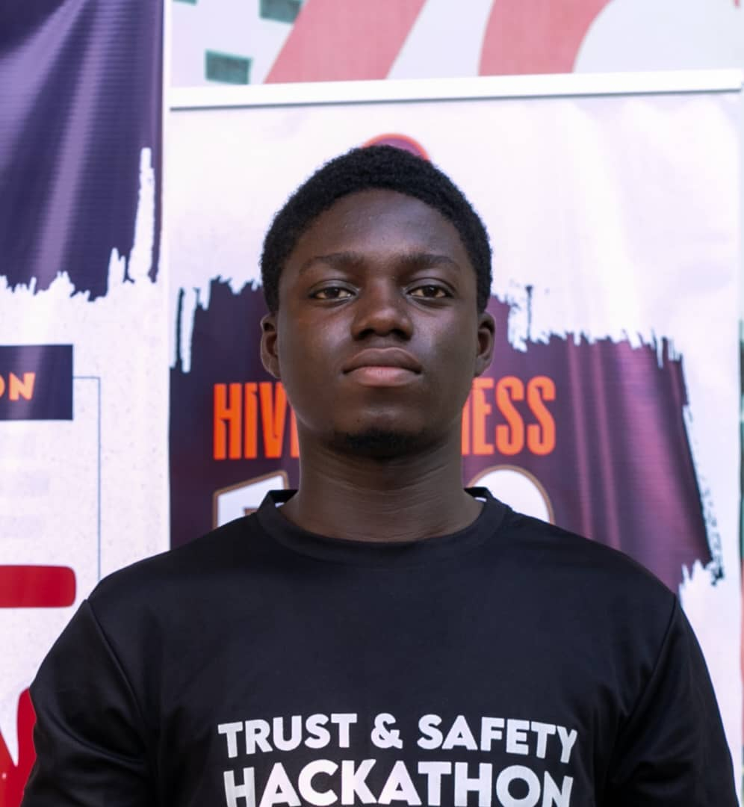

Maurice Elikem Sunuh
CEONana Acquah Insaidoo
Design Engineering LeadEmmanuel Edoukou
UI/UX Design Lead/ Chief Strategy Officer
AGRITEL FARMING SOLUTIONS
To be a transformative force in agriculture, empowering farmers through innovation and knowledge, bridging the digital divide, and fostering sustainable food security for generations.
AgriTel Farming Solutions is dedicated to leveraging innovative technologies such as IoT AI and meteorological data to provide actionable insights to small holder farmers in underserved communities.

Initial market research at Apremdo and KNUST farms
First Agripod prototype development and lab tests
First Agripod prototype field tests and farmer feedback
Design improvements based on field test insights
Agripod Wind Sensor Development
Agripod Prototype Refinement
Second Agripod prototype lab & field testing
Ongoing research and data collection
Preparing Agripod for production
MVP testing, refinement, and launch
The problem of inaccuracy and unreliability of generic weather forecasts for smallholder farmers is a persistent issue, especially in developing countries like Ghana. Generic weather forecasts are often too broad and fail to provide the necessary localized data for farming decisions, such as planting, irrigation, or pest control. This results in poor crop yields, inefficient use of resources, and missed opportunities for smallholder farmers who depend heavily on timely weather information.
Agritel's localized weather forecasting service aims to solve this issue by providing smallholder farmers with accurate, real-time weather information tailored to their specific GPS location. This enables farmers to make informed decisions regarding irrigation, planting, and pest management, leading to improved yields, reduced losses, and more efficient resource usage.